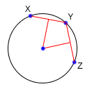
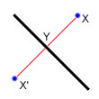
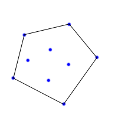
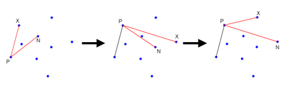

Member Search

|
By lbackstrom
TopCoder Member
...read Section 1
Line-Line Intersection
Finding a Circle From 3 Points
Reflection
Rotation
Convex Hull
In the previous section we saw how to use vectors to solve geometry problems.
Now we are going to learn how to use some basic linear algebra to do line
intersection, and then apply line intersection to a couple of other problems.
Line-Line Intersection
One of the most
common tasks you will find in geometry problems is line intersection. Despite
the fact that it is so common, a lot of coders still have trouble with
it. The first question is, what form are we given our lines in, and what form
would we like them in? Ideally, each of our lines will be in the form
Ax+By=C, where A, B and C are the numbers which define the line.
However, we are rarely given lines in this format, but we can easily generate
such an equation from two points. Say we are given two different points,
(x1, y1) and (x2, y2), and want to
find A, B and C for the equation above. We can do so by setting
A = y2-y1
B = x1-x2
C = A*x1+B*y1
Regardless of how the lines are specified, you should be able to generate two
different points along the line, and then generate A, B and C. Now, lets say
that you have lines, given by the equations:
A1x + B1y = C1
A2x + B2y = C2
To find the point at which the two lines intersect, we simply need to solve the
two equations for the two unknowns, x and y.
double det = A1*B2 - A2*B1
if(det == 0){
//Lines are parallel
}else{
double x = (B2*C1 - B1*C2)/det
double y = (A1*C2 - A2*C1)/det
}
To see where this comes from, consider multiplying the top equation by
B2, and the bottom equation by B1. This gives youA1B2x + B1B2y = B2C1
A2B1x + B1B2y = B1C2
Now, subtract the bottom equation from the top equation to get
A1B2x - A2B1x = B2C1 - B1C2
Finally, divide both sides by A1B2 - A2B1, and you get the equation for x. The equation for y can be derived similarly.
This gives you the location of the intersection of two lines, but what if you have line segments, not lines. In this case, you need to make sure that the point you found is on both of the line segments. If your line segment goes from (x1,y1) to (x2,y2), then to check if (x,y) is on that segment, you just need to check that min(x1,x2) ≤ x ≤ max(x1,x2), and do the same thing for y. You must be careful about double precision issues though. If your point is right on the edge of the segment, or if the segment is horizontal or vertical, a simple comparison might be problematic. In these cases, you can either do your comparisons with some tolerance, or else use a fraction class.
Finding a Circle From 3 Points
Given 3 points which are not colinear (all on the same line) those three points uniquely define a circle. But, how do you find the center and radius of that circle? This task turns out to be a simple application of line intersection. We want to find the perpendicular bisectors of XY and YZ, and then find the intersection of those two bisectors. This gives us the center of the circle.

To find the perpendicular bisector of XY, find the line from X to Y, in the form
Ax+By=C. A line perpendicular to this line will be given by the
equation -Bx+Ay=D, for some D. To find D for the particular line we
are interested in, find the midpoint between X and Y by taking the midpoint of
the x and y components independently. Then, substitute those values into the
equation to find D. If we do the same thing for Y and Z, we end up with two
equations for two lines, and we can find their intersections as described
above.Reflection
Reflecting a point across a line requires the same techniques as finding a circle from 3 points. First, notice that the distance from X to the line of reflection is the same as the distance from X' to the line of reflection. Also note that the line between X and X' is perpendicular to the line of reflection. Now, if the line of reflection is given as Ax+By=C, then we already know how to find a line perpendicular to it: -Bx+Ay=D. To find D, we simply plug in the coordinates for X. Now, we can find the intersection of the two lines at Y, and then find X' = Y - (X - Y).

Rotation
Rotation doesn't really fit in with line intersection, but I felt that it would be good to group it with reflection. In fact, another way to find the reflected point is to rotate the original point 180 degrees about Y.
Imagine that we want to rotate one point around another, counterclockwise by θ degrees. For simplicity, lets assume that we are rotating about the origin. In this case, we can find that x' = x Cos(θ) - y Sin(θ) and y' = x Sin(θ) + y Cos(θ). If we are rotating about a point other than the origin, we can account for this by shifting our coordinate system so that the origin is at the point of rotation, doing the rotation with the above formulas, and then shifting the coordinate system back to where it started.
Convex Hull
A convex hull of a set of points is the smallest convex polygon that contains every one of the points. It is defined by a subset of all the points in the original set. One way to think about a convex hull is to imagine that each of the points is a peg sticking up out of a board. Take a rubber band and stretch it around all of the points. The polygon formed by the rubber band is a convex hull. There are many different algorithms that can be used to find the convex hull of a set of points. In this article, I'm just going to describe one of them, which is fast enough for most purposes, but is quite slow compared to some of the other algorithms.

First, loop through all of your points and find the leftmost point. If there is
a tie, pick the highest point. You know for certain that this point will be on
the convex hull, so we'll start with it. From here, we are going to move
clockwise around the edge of the hull, picking the points on the hull, one
at a time. Eventually, we will get back to the start point. In order to find
the next point around the hull, we will make use of cross products. First, we will pick
an unused point, and set the next point, N, to that point.
Next, we will iterate through each unused points, X, and if
(X-P) x (N-P) (where P is the previous point)
is negative, we will set N to X. After we have
iterated through each point, we will end up with the next point on the convex
hull. See the diagram below for an illustration of how the algorithm works.
We start with P as the leftmost point. Now, say that we have N and X as shown in
the leftmost frame. In this case the cross product will be negative, so we will
set N = X, and there will be no other unused points that make the cross product
negative, and hence we will advance, setting P = N. Now, in the next frame, we
will end up setting N = X again, since the cross product here will be negative.
However, we aren't done yet because there is still another point that will make the
cross product negative, as shown in the final frame.

The basic idea here is that we are using the cross product to find the point
which is furthest counterclockwise from our current position at P. While this
may seem fairly straightforward, it becomes a little bit tricky when dealing
with colinear points. If you have no colinear points on the hull, then the code is very
straightforward.
convexHull(point[] X){
int N = lengthof(X);
int p = 0;
//First find the leftmost point
for(int i = 1; i<N; i++){
if(X[i] < X[p])
p = i;
}
int start = p;
do{
int n = -1;
for(int i = 0; i<N; i++){
//Don't go back to the same point you came from
if(i == p)continue;
//If there is no N yet, set it to i
if(n == -1)n = i;
int cross = (X[i] - X[p]) x (X[n] - X[p]);
if(cross < 0){
//As described above, set N=X
n = i;
}
}
p = n;
}while(start!=p);
}
Once we start to deal with colinear points, things get trickier. Right away we
have to change our method signature to take a boolean specifying whether to
include all of the colinear points, or only the necessary ones.
//If onEdge is true, use as many points as possible for
//the convex hull, otherwise as few as possible.
convexHull(point[] X, boolean onEdge){
int N = lengthof(X);
int p = 0;
boolean[] used = new boolean[N];
//First find the leftmost point
for(int i = 1; i<N; i++){
if(X[i] < X[p])
p = i;
}
int start = p;
do{
int n = -1;
int dist = onEdge?INF:0;
for(int i = 0; i<N; i++){
//X[i] is the X in the discussion
//Don't go back to the same point you came from
if(i==p)continue;
//Don't go to a visited point
if(used[i])continue;
//If there is no N yet, set it to X
if(n == -1)n = i;
int cross = (X[i] - X[p]) x (X[n] - X[p]);
//d is the distance from P to X
int d = (X[i] - X[p]) ⋅ (X[i] - X[p]);
if(cross < 0){
//As described above, set N=X
n = i;
dist = d;
}else if(cross == 0){
//In this case, both N and X are in the
//same direction. If onEdge is true, pick the
//closest one, otherwise pick the farthest one.
if(onEdge && d < dist){
dist = d;
n = i;
}else if(!onEdge && d > dist){
dist = d;
n = i;
}
}
}
p = n;
used[p] = true;
}while(start!=p);
}
...continue to Section 3